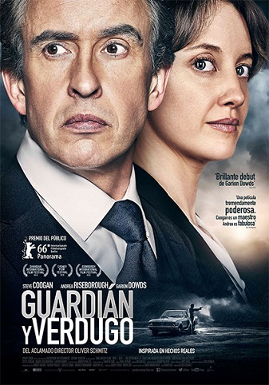

GUARDIAN Y VERDUGO
Titulo:
Guardian y Verdugo
Descripcion:
Un abogado toma un caso de múltiples asesinatos realizados por un guardia de una prisión en Sudáfrica, quien está traumatizado por las ejecuciones de las que ha sido testigo.
Categoria:
Drama
Audio:
Latino e Inglés subtitulada
Calidad:
Full HD Bluray – Video H.264 1900kbps | Audio AAC 160kbps
Director:
Oliver Schmitz
Elenco:
Andrea Riseborough, Steve Coogan, Deon Lotz, Robert Hobbs, Carel Nel, Garion Dowds, Rob van Vuuren, Marcel van Heerden, Julian Koberman, Nicola Hanekom, Matthew Dylan Roberts, De Klerk Oelofse, Brett Williams, Lauren Steyn, Justin Munitz